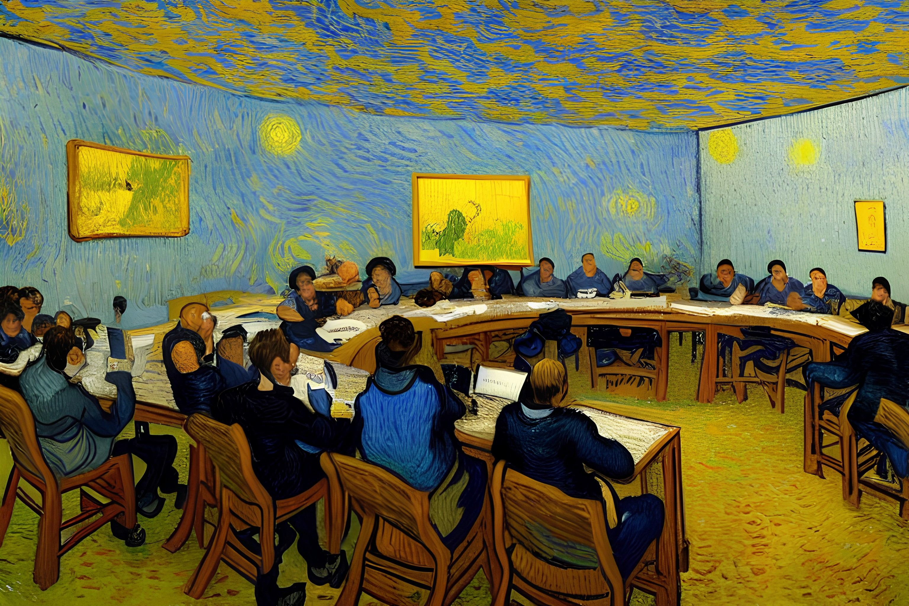

Real-Time & Embedded Systems Laboratory, National Pingtung University
About RESL / 關於實驗室 Photo by Remy_Loz on UnsplashAbout RESL / 關於實驗室
歡迎來到 國立屏東大學「即時與嵌入式系統實驗室」!

本實驗室成立於2007年5月，以「即時系統(Real-Time Systems)」相關之技術與學理為基礎，針對廣受注目的「嵌入式系統(Embedded Systems)」、「資料庫系統(Database Systems)」以及可應用在雲端運算之「虛擬化技術(Virtualization Technologies)」等進行實務型系統設計、實作與理論研究。歡迎有興趣之學生(含大學部專題生與研究生)，加入我們的行列！對於有志從事相關研究主題的本系學生，特別鼓勵申請「五年一貫」，提早從大二或大三開始進行研究工作之準備，未來加入本系碩士班後可以一年的時間取得碩士學位。有興趣的學生，不論你是本校或外校的學生，也不論你是本系或外系的學生，歡迎你和實驗室指導教授約時間面談（聯絡資訊請見本頁下方）。
Research Topics / 研究議題
我們主要進行以下主題的研究工作，點選以下連結以查看更多資訊
即時節能排程與同步方法
嵌入式系統軟體開發與設計
雲端虛擬化平台之高效能資源管理
高效能資料庫技術